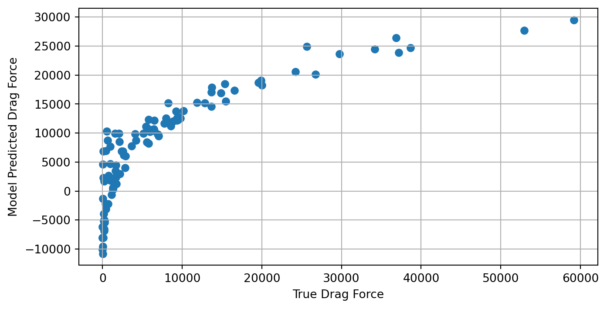

import numpy as np
import matplotlib.pyplot as plt
import pandas as pd
import math2 Linear Least Squares Problems
We begin our exploration of scientific machine learning methods in the fundamental setting of linear regression problems. The intended learning outcomes of these notes are that students should be able to:
- Classify a regression problem as linear or nonlinear
- Understand the abstract form of linear least squares problems
- Define the abstract form of linear least squares problems and be able to explain what its key ingredients are
- Translate a description of a model learning problem in words into a specific instance of the abstract form
- Construct examples of linear least squares problems, cast them in the abstract form, and explain their context
- Solve linear least-squares problems by deriving and solving the normal equations.
- Evaluate linear regression models by computing and interpreting mean error, mean relative error, and \(R^2\) values on both training and test data sets.
2.1 Classifying regression problems as linear vs nonlinear
We have previously introduced regression problems in a general way: recall that the three ingredients of (parametrized) regression problems are (1) paired input and output data, (2) the choice of a parametrized model class, and (3) a method for choosing a model from within that class. The classification of a regression problem as linear or nonlinear depends solely on ingredient (2), the parametrized model class: if the models in that class depend linearly on the model parameters, the regression problem is a linear regression problem.
Check your knowledge: Do you remember what it means for a function to depend linearly on a variable?
The function \(f(z;\theta): \mathbb{R}^d\times\Theta\to\mathbb{R}\) is said to be linear in the parameters \(\theta\) if, for all \(a,b\in\mathbb{R}\) and all \(\theta_1,\theta_2\in\Theta\), the following holds: \(f(z; a\theta_1 + b\theta_2) = af(z;\theta_1) + bf(z;\theta_2)\).
Note that when we say a function is “linear”, we have to specify in what. That is, we can also say \(f(z;\theta)\) is linear in the inputs if, for all \(a,b\in\mathbb{R}\) and all \(z_1,z_2\in\mathbb{R}^d\), the following holds: \(f(az_1 + bz_2;\theta) = af(z_1;\theta)+bf(z_2;\theta)\).
The classification of regression problems as linear or nonlinear depends solely on the dependence of the functions in the parametrized model class on the parameters. That is, we can define functions that are linear in \(\theta\) while being nonlinear in \(z\).
Exercise
Consider the model classes (Equation 1.1)-(Equation 1.3) introduced previously. Are these model classes linear or nonlinear in the parameters? In the inputs?
2.2 Mathematical problem formulation
We are now going to introduce an abstract mathematical problem formulation that can be used to describe many specific instances of linear regression problems. This is a theme of the course and throughout computational mathematics and engineering: abstraction using the language of mathematics lets us isolate the core essence of the problem we’re solving and develop powerful algorithms that can solve specific applications of those problems across a wide range of disciplines. I’ll introduce the abstract formulation first, and follow it up with some specific examples.
Ingredient 1 (the data set): let \(\{(z_i,y_i)\}_{i=1}^N\) be a given data set of paired inputs \(z_i\in\mathbb{R}^d\) and outputs \(y_i\in\mathbb{R}\).
Ingredient 2 (the parametrized model class): let \(x:\mathbb{R}^d\to\mathbb{R}^n\) be a function that maps the \(d\)-dimensional input to an \(n\)-dimensional feature vector. For a fixed \(x\), we will consider the following parametrized model class:
\[ \mathcal{F}_\beta := \{ x(z)^\top \beta : \beta\in\mathbb{R}^n\} \qquad(2.1)\]
Recall that Equation 2.1 is read as “\(\mathcal{F}_\beta\) is defined to be the set of all functions \(f(z;\beta) = x(z)^\top\beta\) for all \(\beta\in\mathbb{R}^n\).” This is an abstract way to define the model class for any linear regression problem, as we will describe in more detail shortly.
Ingredient 3 (the method of choosing the parameters): let \(\beta^*\) be given by
\[ \begin{aligned} \beta^* &= \arg\min_{\beta\in\mathbb{R}^n} \frac1N \sum_{i=1}^N (f(z_i;\beta) - y_i)^2 \\ &= \arg\min_{\beta\in\mathbb{R}^N} \frac1N \sum_{i=1}^N (x(z_i)^\top\beta - y_i)^2. \end{aligned} \qquad(2.2)\] Then, we define the learned model to be \(f(z;\beta^*) = x(z)^\top\beta^*\). We call \(\beta^*\) defined this way the “optimal regression parameters” or just the “optimal parameters”, because they are the result of solving an optimization problem. Note that the objective of this optimization function is defined by the data, and represents the average squared error of the model over the data set.
Taken together, the three ingredients I have defined above define a linear least squares problem, which is a subclass of linear regression problems. We’ll now give several examples of specific instances of linear least squares problems to illustrate how broadly applicable this abstract framework is.
2.3 Examples
2.3.1 Example 1: Aerodynamic drag prediction
An important task in aerodynamic design is predicting lift and drag forces on a body moving through air. Let’s consider a simplified problem where we are given an fixed airfoil design and our goal is to predict the drag force \(F_d\) on the airfoil as a function of three parameters which describe its flight conditions:
- The angle of attack \(\alpha\)
- The density of the fluid \(\rho\)
- The freestream velocity of the air \(v\)
To put this problem in our abstract framework, we define \(z = (\alpha,\rho,v)^\top\) to be a three-dimensional input, and take the output to be the drag force \(y= F_d\). In order to define a regression problem, we require the existence of a data set \(\{(z_i,y_i)\}_{i=1}^N\). Note that in this case \(z_i = (\alpha_i,\rho_i,v_i)\). We assume that this data set is given.
In linear regression problems, defining the model class amounts to choosing a set of regression features by defining \(x\). A simple choice takes the inputs themselves to be features: \(x^{(1)}(z) = z = (\alpha,\rho,v)^\top\). This leads to a class of parametrized models with a three-dimensional unknown parameter vector \(\beta\in\mathbb{R}^3\). The models in this class have the following form:
\[ f^{(1)}(z;\beta) = x^{(1)}(z)^\top\beta = (\alpha,\rho,v) \beta = \beta_1\alpha + \beta_2\rho + \beta_3 v. \]
There are many other possible choices. For example, consider \(x^{(2)}(z) = (\alpha,\rho, v, \alpha^2, \rho^2, v^2, \alpha\rho, \alpha v, \rho v)^\top\). This leads to a parametrized model class with a nine-dimensional unknown parameter vector \(\beta\in\mathbb{R}^9\):
\[ \begin{aligned} f^{(2)}(z;\beta) &= x^{(2)}(z)^\top\beta = (\alpha,\rho, v, \alpha^2, \rho^2, v^2, \alpha\rho, \alpha v, \rho v)\beta \\ &= \beta_1\alpha + \beta_2\rho + \beta_3 v + \beta_4\alpha^2 + \beta_5\rho^2 + \beta_6 v^2 + \beta_7\alpha\rho + \beta_8\alpha v + \beta_9 \rho v \end{aligned} \]
For either the above choices of features \(x^{(1)}(z)\) or \(x^{(2)}(z)\), we could then define and solve the minimization Equation 2.2 to find the optimal regression parameters and define our learned model \(f^{(1)}(z;\beta^*)\) or \(f^{(2)}(z;\beta^*)\).
Understanding notation
Note that we use \(\beta\) to denote the unknown parameters in both \(f^{(1)}\) and \(f^{(2)}\) above despite \(\beta\) referring to different quantities in the definition of the different functions. This is a common notational shortcut — while we could use the notation \(\beta^{(1)}\in\mathbb{R}^3\) and \(\beta^{(2)}\in\mathbb{R}^9\) to specify the different \(\beta\) for the different functions, this can be cumbersome if we are considering many different options for the choice of features \(x(z)\), and it’s standard to just use \(\beta\), where the definition of \(\beta\) is implied by the context. One of the challenges in learning about machine learning and computational mathematics more generally is getting used to similar notation meaning different things in different contexts. That’s one of the things that we’ll practice in this course.
2.3.2 Example 2: Monitoring the Maximum Displacement of a Bridge
Least-squares regression is a powerful tool for estimating unknown quantities in many scientific and engineering disciplines beyond Aerospace. Let’s instead say we are interested in accurately estimating the maximum displacement at the midpoint of a bridge under various input-conditions measured by sensors along the bridge. Suppose we can accurately gather the following inputs:
- Load applied to the bridge, \(L\)
- Temperature at the midpoint of the bridge, \(T\)
- Dominant frequency in the bridge, \(f\)
We are interested in quickly estimating the Maximum Displacement (mm), \(D\), from these measurements. As we can see, the context of our problem has changed entirely, but we can still fit it into our existing framework by defining the input vector \(z=(L, T, f)^\top\) and output \(y=D\). If we take \(N\) measurements throughout the year under various environmental conditions, we can again form some training dataset \(\{(z_i, y_i)\}_{i=1}^N\) which we can use to define some feature-set \(x(z)\) and then solve for the optimal weights that map \(x(z)\) to \(y\) identically to how we did in Example 1.
2.3.3 Example 3: Detecting Cardiac Arrhythmia using Health-Monitoring Devices
Many health issues are often difficult to detect without extensive testing. However, with the increase in biometric data available from devices such as smartphones and smart-watches, it has become increasingly feasible to predict health conditions by leveraging this information. \(V O_2\) max is a measure of the maximum rate at which a person can use oxygen during exercising and is considered a standard measure of cardiovascular fitness. However, to measure this experimentally requires an extensive laboratory test that measures the volume of oxygen a patient breathes during exercising. Let’s now suppose we have developed a smart-watch that gathers the following health-data from its user:
- Median daily Step-Count \(s\)
- Resting Heart Rate \(r\)
- Respiratory Rate \(b\)
From these measurements, we are interested in accurately estimating the \(VO_2\) max of a patient. Let’s say we have a large sample of many patients of various ages and demographics who have worn our smart-watch for a long period of time. For the \(i\) th patient, suppose we have \(s_i\), \(r_i\) and \(b_i\) collected from the device and we have measured each patient’s actual \(VO_2\) max in a laboratory setting, which we denote \(y_i\). We then form a training dataset, \(\{(z_i, y_i)\}_{i=1}^N\) and solve the least-squares regression problem using the discrete values for \(y\) exactly how we did in Example 1.
2.4 Solving linear least squares problems
Linear least squares problems are special because they have closed form solutions: that is, we can write an analytical expression for the optimum parameters \(\beta^*\) in terms of the data. To do so, we are going to define a feature data matrix \(X\in\mathbb{R}^{N\times n}\) and an output data vector \(Y\in\mathbb{R}^N\) as follows:
\[ X = \begin{pmatrix} - &x^\top(z_1) & - \\ & \vdots & \\ - & x^\top(z_N) & - \end{pmatrix}, \qquad Y = \begin{pmatrix} y_1 \\ \vdots \\ y_N \end{pmatrix}, \] where the rows of \(X\) and the elements of \(Y\) correspond to input-output pairs in the data set. Note that each column of \(X\) corresponds to a different feature defined by an element of the vector-valued function \(x\).
Using this notation, Equation 2.2 can be rewritten as
\[ \beta^* = \arg\min_{\beta\in\mathbb{R}^n} \frac1N\|X \beta - Y\|^2 \qquad(2.3)\]
This is the minimization of a multivariate function (because \(\beta\) is a vector). Recall from calculus that to find minimizers of multivariate functions we first seek critical points that satisfy the first-order necessary conditions for optimality: that is, we look for points where the derivative of the objective function is 0. Let \(\mathcal{L}(\beta) = \frac1N\|X\beta-Y\|^2 = \frac1N(X\beta - Y)^\top (X\beta-Y)\). Then,
\[ \frac{\partial\mathcal{L}}{\partial \beta} = \frac2N(X^\top X\beta - X^\top Y) \]
Setting the derivative equal to 0 yields the standard normal equations1:
\[ X^\top X\beta^* = X^\top Y \]
If \((X^\top X)\) is invertible, then the unique solution to the normal equations is given by
\[ \beta^* = (X^\top X)^{-1} X^\top Y \]
and this choice of \(\beta\) defines our final learned model: \(f(z;\beta^*) = x(z)^\top\beta^*\).
2.4.1 Using Python for Least-Squares Regression
Now let’s explore how we can actually solve for our optimal weights, \(\beta^*\), given some training data with code. First, we need to import the libraries we need to work with matrices/vectors (numpy), plot results (matplotlib), work with dataframes (pandas), and easily perform more math than base python allows like \(\pi\), sines, cosines, and square-roots (math).
Now let’s say we’ve imported some pandas dataframe called df that contains a set of empirical data from Example 1 (Assume it comes from experimental trials or simulations). We can print the first few rows of the dataset using the df.head() method:
df.head()| alpha | rho | velocity | f_drag | |
|---|---|---|---|---|
| 0 | 16.854305 | 1.319114 | 79.481130 | 9425.204935 |
| 1 | 42.782144 | 1.203298 | 50.263709 | 13722.379248 |
| 2 | 32.939727 | 1.320528 | 57.690388 | 12863.441979 |
| 3 | 26.939632 | 0.696729 | 49.251769 | 3644.076532 |
| 4 | 7.020839 | 1.227098 | 19.524299 | 186.612122 |
Let’s define our input features as \(x(z) = (\alpha, \rho, v)^\top\). We can now form \(X\) (our training inputs) and \(Y\) (our training outputs) matrices by extracting the input features and outputs from the dataframe:
# The hstack method concatenates column vectors into
# an N x d matrix like [1 alpha rho velocity]
X = np.hstack((np.ones((N, 1)), df[['alpha', 'rho', 'velocity']].values))
Y = df['f_drag'].valuesWe can solve for \(\beta^*\) using the np.linalg.lstsq() function which efficiently solves the least-squares equation \(X \beta = Y\). The rcond keyword argument specifies how “well-conditioned” we want our result to be, achieved by cutting off the smallest singular values of \(X\) (don’t worry too much about this for now). Setting it to None assumes \(X\) is well-conditioned i.e. far from being rank-deficient. By default, the lstsq() function returns a list of the optimal weights, \(\beta^*\), the residuals of the training data (\(X \beta - Y\)), the rank of \(X\), and the singular values of \(X\). For now, we’re only interested in \(\beta^*\), so we use [0] to select this value.
beta_star = np.linalg.lstsq(X, Y, rcond=None)[0]We are now able to compute the model’s predictions at the training inputs:
Y_hat = X @ beta_starLet’s now plot \(\hat{{Y}}\) and \({Y}\) to examine how closely correlated the two are. A straight line with slope 1 would mean the linear regression model exactly matched all of the training outputs:
plt.figure(figsize=(8,4))
plt.scatter(Y, Y_hat)
plt.grid()
plt.xlabel("True Drag Force")
plt.ylabel("Model Predicted Drag Force")Text(0, 0.5, 'Model Predicted Drag Force')
This plot shows that there is clearly a strong, but nonlinear relationship between the true and model-predicted drag-force. We observe that the linear regression model under-predicts the drag-force when the true force is very low or very high and the model over-predicts the drag-force when the true force is around 5000N. This shows that when the relationship between the input features and the output is nonlinear, linear regression may provide good estimates on average, but choosing features to better capture this nonlinearity may provide much more accurate outputs over the entire input domain.
2.5 Assessing the learned models
2.5.1 Common Performance Metrics
Once we have trained a model (in the linear regression case, we have computed the optimal \(\beta\) that maps our training inputs to our training outputs), it’s important to have some quantitative way to measure how “well” our model is able to do this. There are many, many ways to measure model performance. For regression problems, the popular sklearn python package for machine learning has thirteen different metrics to assess model performance. We will outline some of the most prominent metrics in this section.
A natural way to assess model performance is to measure the error between the model’s predictions and actual outputs. One common way to do this is computed is with mean squared error:
\[ \text{MSE} = \frac{1}{N} \sum_{i=1}^N (\hat{y}_i - y_i)^2 \]
where \(\hat{y}_i\) is the model’s best approximation of \(y_i\), using inputs \(x_i\). Because of how linear regression is formulated, the estimator \(\beta^*\) will be the set of weights that minimize the MSE of the training data. If \(X\) is full-rank, \(\beta^*\) will be unique. However, many data-scientists dislike the MSE because it penalizes higher errors more than lower errors and in the context of physical experiments the squared error doesn’t have easily interpretable units. For instance, in Example 1 we sought to predict drag-force in Newtons. Using the MSE would produce an error with units of (Newtons)\(^2\) which doesn’t have an intuitive physical interpretation. For this reason, many scientists use the mean absolute error:
\[ \text{MAE} = \frac{1}{N} \sum_{i=1}^N |\hat{y}_i - y_i| \]
In Example 1, this would give us an error with units of Newtons that we can interpret as “the linear regression model deviates from the true outputs by ___ Newtons on average”. If the output data significantly varies in magnitude over the domain of the input, then we may expect MSE and MAE to dominate in places where the magnitude of \(y\) is large. To combat this problem, we might choose to use mean relative error to assess the performance of our model. This scales the error at each input/output pair according to how large the output is:
\[ \text{MSE} = \frac{1}{N} \sum_{i=1}^N \frac{|\hat{y}_i - y_i|}{|y_i|} \]
At the end of 2.4, we plotted each training output, \(y_i\), on the x-axis of a plot and the model’s best guess (\(\hat{y}_i\)) on the y-axis. If the model was able to perfectly match each \(y_i\), then we should expect a perfect line with a slope of 1 (\(\hat{y}=y\)). Using the pearson correlation coefficient, often denoted \(R\) or the coefficient of determination, \(R^2\), we can assess how accurately the model is able to match a given set of outputs. We can compute this as:
\[ R = \frac{\sum (\hat{y}_i -\bar{\hat{y}})(y_i - \bar{y})}{\sqrt{\sum (\hat{y}_i -\bar{\hat{y}})^2 \sum (y_i - \bar{y})^2}} \]
When \(\hat{y}\) perfectly matches the true outputs, \(y\), we get a pearson correlation coefficient of \(R=R^2=1.0\). Anything lower indicates an imperfect match between the model’s predictions and the true outputs.
2.5.2 Cross-Validation
Up to now, we have only discussed model performance as it relates to the data used to train the model. However, the entire reason we go to the trouble of training machine learning models is so they can be used to make accurate predictions on unseen data. Famous LLMs like ChatGPT are so valuable because we can ask them questions they have never seen before and they can still provide coherent, useful answers.
Oftentimes, when machine learning models are highly expressive, (i.e. can model complex functional relationships) they tend to overfit to their training data. This happens when the model is so good at matching its training data, it does not generalize well to data it hasn’t seen before. This can be especially problematic when our training data contains some sort of noise or uncertainty and our trained model begins to conform to the noise present in the training data.
A straightforward method to assess how much a model is overfitting its training data is to form a train and test set. Usually around 80% of the training data is used to train the model and about 20% is kept out of the training process and used to evaluate the model’s ability to generalize to data it hasn’t seen before. A model that generalizes well should exhibit approximately the same performance on its testing data as its training data. When a model shows significantly worse performance on its test dataset, this indicates that the model might be overfitting its training data.
Let’s refer back to Example 1, when we were trying to accurately predict the force of drag on an airfoil. Say we break up the training data (X and Y) into (Xtrain, Ytrain) and (Xtest, Ytest); one dataset to train the model and one to evaluate it. Suppose we receive the following values for Mean Absolute Error on the training and test predictions:
Training MAE: 61.456 NTesting MAE: 595.328 N
This shows that the model exhibits significantly lower error on its training data, and much higher on data it hasn’t seen before. This is typically a dead giveaway of overfitting.
2.6 Exercises
Recall that the loss-function for least-squares regression is given by \(\mathcal{L}(\beta) = \frac 1N|| X \beta - Y||_2^2\). Show that the gradient of \(\mathcal{L}\) with respect to \(\beta\) is given by \(\nabla_\beta \mathcal{L} = \frac2N \left( X^\top X \beta - X^\top Y\right)\)
Hint: you may find the following identities from the Matrix Cookbook (Petersen and Pedersen 2012) useful. For \(v,u\in\mathbb{R}^n\) and \(A\in\mathbb{R}^{n\times n}\), the following hold:
- \(\nabla_v (v^\top A v) = 2Av\)
- \(\nabla_v (v^\top u) = \nabla_v(u^\top v) = u\)
For an extra-thorough learning experience, try deriving the above identities from the definitions of matrix-vector and dot products.
Consider a matrix \(A \in \mathbb{R}^{n \times m}\). Which of the following are necessary conditions for \(A\) to be invertible? Which are sufficient?
- \(A\) is a square matrix, i.e. \(n = m\)
- The columns of \(A\) span \(\mathbb{R}^{n}\)
- The columns of \(A\) are linearly independent
- \(A\) has no linearly dependent columns
- The null-space of \(A\) is empty
- The only solution of \(A X = 0\) is \(X = 0\).
- \(A\) is a square matrix, i.e. \(n = m\)
- Show that \(X^\top X\) is invertible if and only if \(X\) has full column-rank.
- Explain why \(\beta^*\) is the unique solution to the normal equations if \((X^\top X)\) is invertible. If \((X^\top X)\) is not invertible, describe all solutions to the normal equations.
2.7 Further reading
Linear Algebra Crash Course (Section A.1)
The Matrix Cookbook (Petersen and Pedersen (2012))
Petersen, Kaare Brandt, and Michael Syskind Pedersen. 2012. “The Matrix Cookbook.” https://www.math.uwaterloo.ca/~hwolkowi/matrixcookbook.pdf.
note that the constant factor \(\frac2N\) drops out. It’s common to play fast and loose with multiplicative constants in minimizations – other sources define the minimization objective with a \(\frac12\) multiplier, which leads to the derivative not having the factor of 2 in front and leads to the same critical point. Or you may see the objective function defined without the \(1/N\) in front, which still leads to the same critical point.↩︎